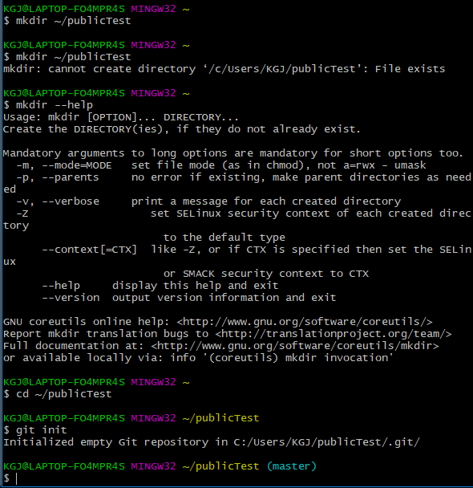

what's 'GIT'?
git hub = sourcecode socialNetwork. repository
git = project version management software
Version Control System.
프로젝트를 공유하거나 version에 따라 commit 시켜 사용자에게 프로젝트 import & export 에서 발생되는 erorr를 방지하고 실무적으로 관리하기 편하며 유지보수가
용이하도록
지원해준다. 하나의 컴퓨터로 혼자서만 프로젝트를 진행할 사람에겐 전혀 필요하지 않은 기능일수도 있지만, 소스코드는 폐쇄적일수록 가치가 낮아진다. 큰 규모의 프로젝트 혹은 집단지성과 협업을 위해서라도
지금부터라도 git을 알아보고 배우자.
**단, 학습의 과정에선 오히려 복잡도를 증가하기 때문에 상황판단을 잘하여 배워야 한다
기본적으로 숙지해야 될 용어.
Command Line : 명령 프롬포트(equals. Mac.terminal)
Repository : 저장공간
Version Control : 깃의 서비스 목적(snapShot로 시점유지)
Commit : 체크포인트를 가져 복원&진행
Branch : 공통요소를 독립적인 작업 진행이 가능하게 한다

git bash 초기 셋팅.
command line 으로 repository 의 기본값을 설정해준다
now, computer is set the Git-ready directory position.
and we made on-off line project repository.
touch는 "create!" 와 비슷하다.
-m 은 메시지 전달 방식에 쓰이는 것이라 생각하면 된다.
git은 스냅샷과 커밋이 필수이다 . 파일 생성과 추가와는 다름.

git에게 원격 저장소(origin)를 알려준다.

이제 push 와 fetch가 가능하다!